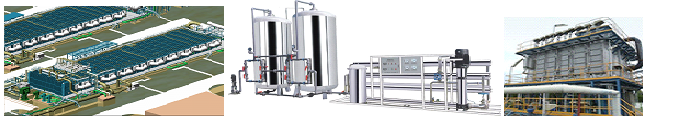

Water
Written by admin

We provide procurement services for water industry equipments and OEM parts not limited but to all O&M companies, Fabricators and EPC Contractors as of our extensive experience in this field. We do have experience of pre-treatment, post treatment, Storage tanks, pumping station, water transmission and distribution lines equipments and parts and provide services for the,
Desalination Multistage Flash Distillation (MSF), Multi Effect Distillation (MED), Sea Water Reverse Osmosis (SWRO), Sewage Waste Water Treatment Water Recycling, Activated Carbon & Cartage Filtrations, MBR Waste Water Treatment System, Nature Cell Sewage Treatment Plant using Rotating Biological Contactor (RBC) Technique and Ultra filtration R.O Drinking Water and High Purity Water Systems, Brackish Water Reverse Osmosis (BWRO), Electro dialysis (ED / DER), Ultra filtration, Water Softening Units, Lime Dosing Units, Chlorination and UV Systems, Boiler Feed Water and Industrial Water Systems, Ion Exchange R.O